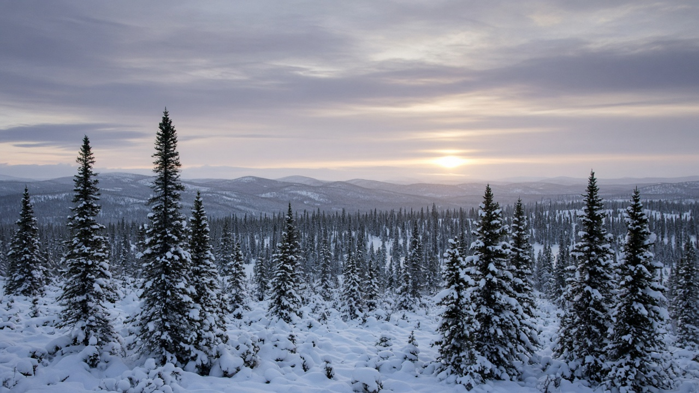
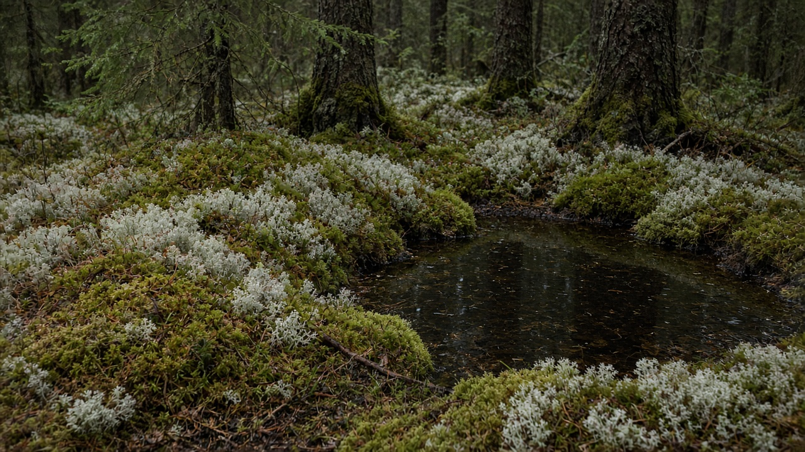
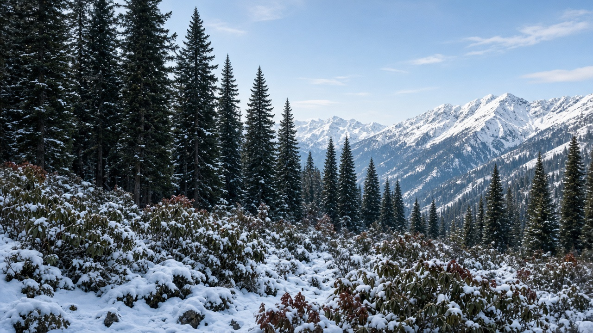

Boreal Forests and Taiga Ecosystems
Published on August 20, 2026

Boreal forests, often called taiga, form a vast circumpolar belt of needle-leaved trees across high northern latitudes where winters are long, soils are cold, and the growing season is short. Spruce, fir, pine, and larch dominate, with a moss-and-lichen floor, peat-filled depressions, and patches of birch and aspen after fire. Permafrost and seasonally frozen ground slow decomposition, so thick organic layers store more carbon than the living canopy in many stands. Snow packs insulate soils, supply spring meltwater, and shape animal movement, while summer days that barely darken drive a brief burst of photosynthesis. These ecosystems are not empty timber frontiers: they regulate northern hydrology, host migratory birds, and hold a carbon stock whose disturbance can feed back into global climate.
Fire, insects, and wind are the main natural resetters of taiga structure. Stand-replacing burns create even-aged mosaics of young pine or aspen that later yield to spruce, while surface fires thin understory without killing all canopy trees. Bark beetles and defoliators track drought and warm winters, expanding outbreaks as climate warms. Logging that ignores this disturbance template—large clearcuts without retained patches, or fire suppression that lets fuels accumulate—can produce larger, more severe events than the historical range. Peatlands embedded in the forest matrix must be treated as part of the same system: draining them for roads or harvest oxidizes ancient carbon and dries adjacent stands. Remote sensing of burn scars, greenness, and snow duration now complements field inventories that measure organic depth as well as stem volume.
Stewardship of boreal landscapes therefore couples modest harvest intensity with respect for freeze–thaw, peat, and fire cycles. Winter operations on frozen ground reduce soil rutting; leaving seed trees, dead wood, and uncut islands maintains habitat structure and regeneration sources. Indigenous and local knowledge of ice roads, berry patches, and fire history often maps risk better than a uniform rotation age. Although Nepal does not host true taiga, high-Himalayan fir–rhododendron and subalpine conifer belts share cold soils, slow growth, and fire sensitivity, so boreal lessons on carbon-rich organic layers and careful winter access still travel. Treating taiga as a climate regulator rather than a distant warehouse of pulpwood keeps policy focused on keeping carbon in cold soils, not only counting trees that remain standing.

बोरेयल वन, प्रायः ताइगा भनिने, उच्च उत्तरी अक्षांशमा सुई-पात रूखहरूको विशाल परिध्रुवीय पट्टी हो जहाँ जाडो लामो, माटो चिसो र वृद्धि मौसम छोटो हुन्छ। स्प्रुस, फर, सल्ला र लार्च प्रधान हुन्छन्, काई-लिचेन भुइँ, पीट भरिएका खाडल र आगोपछि भुर्ज तथा एस्पनका प्याचसहित। पर्माफ्रोस्ट र मौसमी जमेको जमिनले विघटन सुस्त पार्छ, त्यसैले धेरै स्ट्यान्डमा बाक्लो जैविक तहले जीवित छानोभन्दा बढी कार्बन राख्छ। हिउँको तहले माटो इन्सुलेट गर्छ, वसन्त पग्लने पानी दिन्छ र जनावर चाल आकार दिन्छ भने लगभग नअँध्यारो गर्मी दिनले प्रकाश संश्लेषणको छोटो विस्फोट चलाउँछ। यी प्रणाली रित्तो काठ सीमा होइनन्: तिनीहरूले उत्तरी जलविज्ञान नियमन गर्छन्, बसाइँ सर्ने चरा राख्छन् र यस्तो कार्बन भण्डार बोक्छन् जसको अवरोध विश्व जलवायुमा फिर्ता खुवाउन सक्छ।
आगो, कीरा र हावा ताइगा संरचनाका मुख्य प्राकृतिक रिसेटर हुन्। स्ट्यान्ड बदल्ने डढेलोले युवा सल्ला वा एस्पनका समान उमेर मोज़ेक बनाउँछ जुन पछि स्प्रुसमा जान्छ, जबकि सतह आगोले सबै छानो रूख नमारी तल्लो वन पातलो पार्छ। बोक्रा कीरा र पात खाने कीराले खडेरी र न्यानो जाडो पछ्याउँछन्, जलवायु तात्दा प्रकोप फैलाउँछन्। यो अवरोध ढाँचा बेवास्ता गर्ने कटान—राखिएका प्याचविना ठूला खाली कटान, वा इन्धन जम्मा हुन दिने आगो दमन—ऐतिहासिक दायराभन्दा ठूला, गम्भीर घटना पैदा गर्न सक्छ। वन म्याट्रिक्सभित्रका पीटभूमि एउटै प्रणालीका भाग हुन्: सडक वा कटानका लागि निकास गर्दा प्राचीन कार्बन अक्सिडाइज हुन्छ र छेउका स्ट्यान्ड सुक्छन्। जलेको दाग, हरियाली र हिउँ अवधि को सुदूर संवेदनले काण्ड आयतनसँगै जैविक गहिराइ नाप्ने क्षेत्र सूचीलाई पूरक गर्छ।
बोरेयल परिदृश्य हेरचाह त्यसैले सीमित कटान तीव्रतालाई जम्ने-पग्लने, पीट र आगो चक्रको सम्मानसँग जोड्छ। जमेको जमिनमा जाडो कार्यले माटो खाल्डो घटाउँछ; बीउ रूख, मृत काठ र नकाटिएका टापु छोड्दा वासस्थान संरचना र पुनरुत्पादन स्रोत रहन्छ। बरफ सडक, बेर प्याच र आगो इतिहासको आदिवासी तथा स्थानीय ज्ञान प्रायः एकरूप चक्र उमेरभन्दा जोखिम राम्रो नक्सा गर्छ। नेपालमा साँचो ताइगा छैन, तर उच्च हिमाली धुपी–गुराँस र उपअल्पाइन कोनिफर पट्टीले चिसो माटो, सुस्त वृद्धि र आगो संवेदनशीलता साझा गर्छन्, त्यसैले कार्बन-समृद्ध जैविक तह र सावधानीपूर्ण जाडो पहुँचका बोरेयल पाठ अझै यात्रा गर्छन्। ताइगालाई टाढाको लुगदी गोदाम होइन जलवायु नियामक मानेर नीति उभिएका रूख गन्तीमा मात्र होइन चिसो माटोमा कार्बन राख्न केन्द्रित रहन्छ।

बोरेयल वन, जिन्हें अक्सर ताइगा कहा जाता है, उच्च उत्तरी अक्षांशों में सुई-पत्ती वृक्षों की विशाल परिध्रुवीय पट्टी हैं जहाँ सर्दी लंबी, मिट्टी ठंडी और वृद्धि मौसम छोटा होता है। स्प्रूस, फ़िर, चीड़ और लार्च प्रधान रहते हैं, काई-लाइकेन फ़र्श, पीट भरे गर्त और आग के बाद भुर्ज व ऐस्पन के पैच सहित। पर्माफ़्रॉस्ट और मौसमी जमी भूमि विघटन धीमा करती है, इसलिए कई स्टैंड में मोटी जैव परतें जीवित छत्र से अधिक कार्बन रखती हैं। बर्फ़ परत मिट्टी को इन्सुलेट करती, वसंत पिघल जल देती और पशु चाल आकार देती है, जबकि लगभग अँधेरा न होने वाले गर्मी दिन प्रकाश संश्लेषण का संक्षिप्त विस्फोट चलाते हैं। ये तंत्र खाली इमारती लकड़ी सीमाएँ नहीं हैं: वे उत्तरी जलविज्ञान नियंत्रित करते, प्रवासी पक्षी रखते और ऐसा कार्बन भंडार रखते हैं जिसकी गड़बड़ी वैश्विक जलवायु में वापस खिला सकती है।
आग, कीट और पवन ताइगा संरचना के मुख्य प्राकृतिक रीसेटर हैं। स्टैंड बदलने वाली दावानल युवा चीड़ या ऐस्पन के सम-आयु मोज़ेक बनाती है जो बाद में स्प्रूस की ओर जाते हैं, जबकि सतह आग सभी छत्र वृक्ष मारे बिना अधोवन विरल करती है। छाल भृंग और पर्णभक्षी सूखा और गर्म सर्दी का अनुसरण करते हैं, जलवायु गर्म होने पर प्रकोप फैलाते हैं। इस विक्षोभ ढाँचे की अनदेखी करने वाली कटाई—रखाए पैच के बिना बड़े खाली कटान, या ईंधन जमा होने देने वाला आग दमन—ऐतिहासिक दायरे से बड़े, गंभीर घटनाएँ पैदा कर सकती है। वन मैट्रिक्स में पीटभूमि उसी तंत्र का भाग हैं: सड़क या कटाई के लिए निकासी प्राचीन कार्बन ऑक्सीकृत करती और पड़ोसी स्टैंड सुखाती है। जले दाग, हरियाली और बर्फ़ अवधि के सुदूर संवेदन तना आयतन के साथ जैव गहराई नापने वाली क्षेत्र सूची की पूरक करते हैं।
बोरेयल परिदृश्य प्रबंधन इसलिए सीमित कटाई तीव्रता को जमाव–पिघलाव, पीट और आग चक्र के सम्मान से जोड़ता है। जमी भूमि पर शीतकालीन कार्य मिट्टी गड्ढे घटाते हैं; बीज वृक्ष, मृत काष्ठ और न काटे द्वीप छोड़ने से आवास संरचना और पुनरुत्पादन स्रोत रहते हैं। बर्फ़ सड़कों, बेरी पैच और आग इतिहास का आदिवासी तथा स्थानीय ज्ञान अक्सर एकरूप चक्र आयु से बेहतर जोखिम नक्शा करता है। नेपाल में सच्चा ताइगा नहीं है, पर उच्च हिमाली देवदार–बुराँस और उपअल्पाइन कोनिफर पट्टियाँ ठंडी मिट्टी, धीमी वृद्धि और आग संवेदनशीलता साझा करती हैं, इसलिए कार्बन-समृद्ध जैव परतों और सावधानीपूर्ण शीतकालीन पहुँच के बोरेयल पाठ अभी भी यात्रा करते हैं। ताइगा को दूर लुगदी गोदाम नहीं जलवायु नियामक मानकर नीति खड़े वृक्ष गिनती पर नहीं ठंडी मिट्टी में कार्बन रखने पर केंद्रित रहती है।